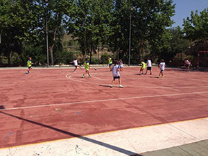

Parque construído al lado del rio, cuenta con la fuente de los Chorradores, cancha deportiva, entretenimiento para los mas pequeños y lugar de esparcimiento, con mucha sombra. En verano con motivo de la semana culturas se suelen organizar verbenas y otros actos culturales.